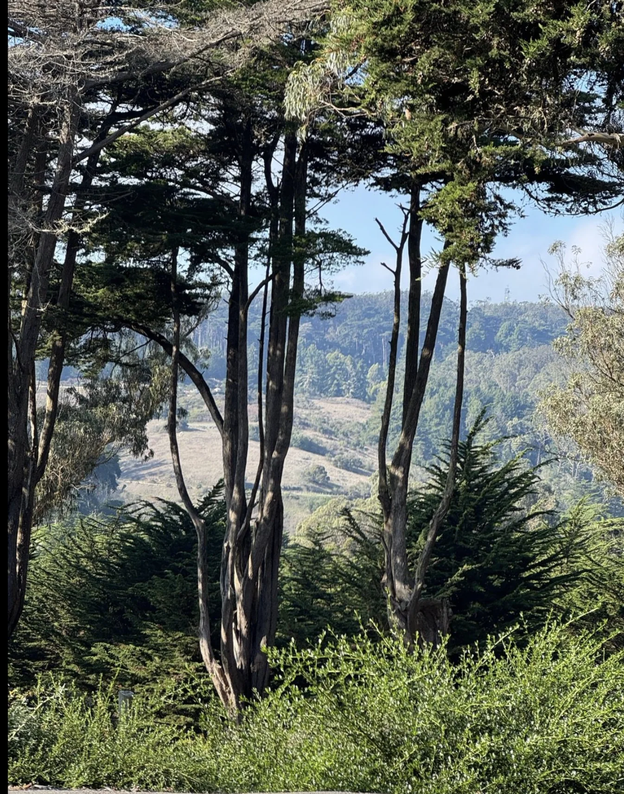
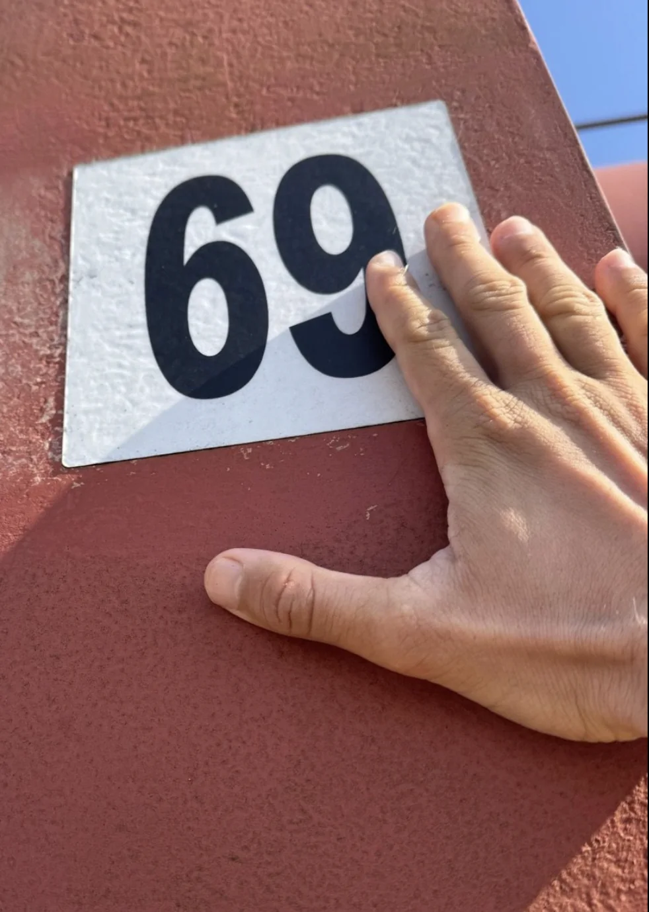
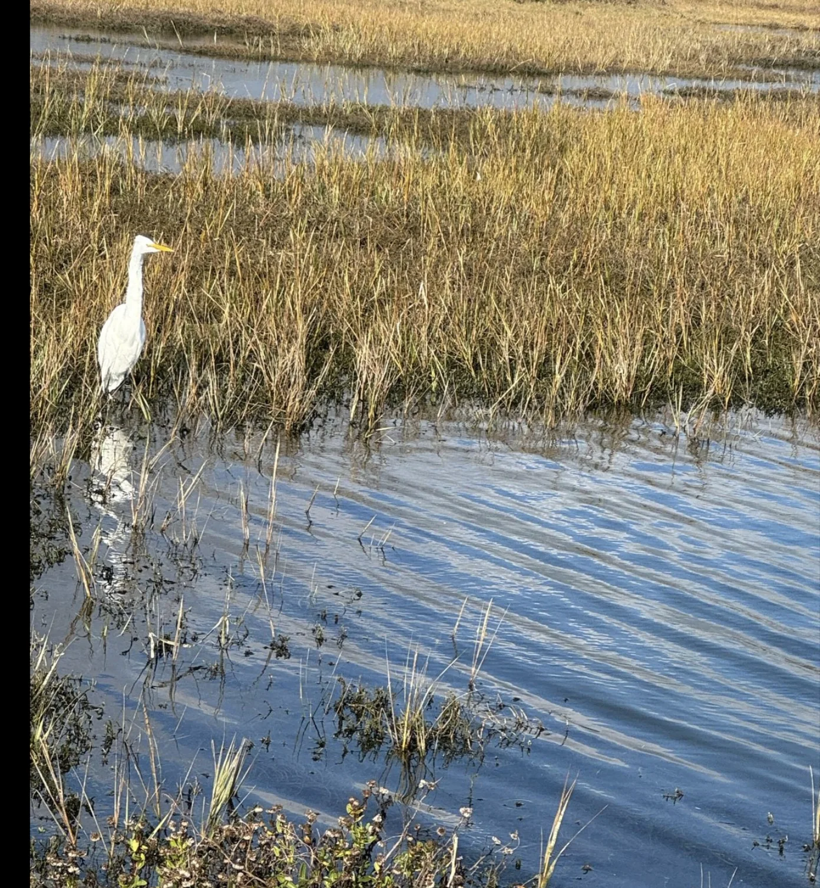
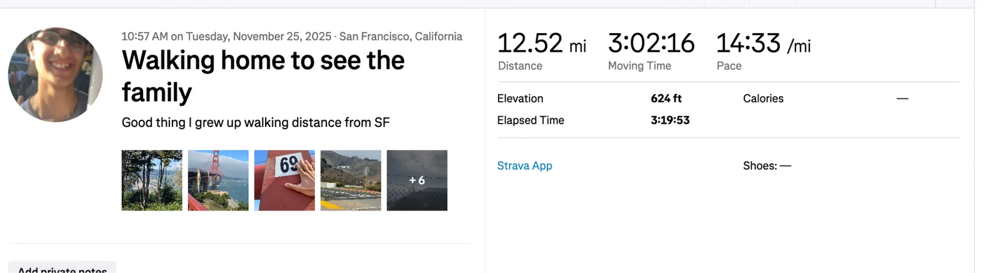

Shoutouts
Happy birthday to “The Shadow Brigade!” Its rare that I meet someone right off the bat and immediately we do a bunch of random stuff like coming to help me shop in Stonestown. You’re also the person I’ve spent the most time going on a continuous walk with! :D. Not to mention I really appreciate your banter, you’re an awesome friend! Also I totally didn’t write this because you told me you’d cry if I didn’t put a birthday shoutout for ya in the newsletter. Totally.
Monday
Today I was supposed to talk to the CEO at a startup who incidentally I saw and liked on Hinge a year or two ago. Small world. We didnt’ end up talking because she said the company had a security incident so she needed to reschedule. In response I told her to SOC em good. Much like my Hinge like … no response.
I also interviewed at “The Raja of Rhythm”’s company and I managed to not shit the bed enough and got a next round interview.
Once that was done I went to Mission Run Club with the aforementioned “The Raja of Rhythm” along with “The Italian Stallion” and some other folks. Today there was a new guy who joined and was definitely the fastest person there. I did my best to keep up with him and solidified myself as a solid second place but I knew I wasn’t really beating him. We did an uphill run up to Kite Hill which definitely beat me up a bit. Thankfully I never dipped below a 9 min/mile pace even on the uphill but it was definitely a struggle bus. Enjoy this picture from the top of the hill which symbolizes me running up the hill
As clear headed as I was :D
During that run I met someone and I asked my usual question “What’s something cool or interesting about you that people wouldn’t expect?” and in turn I got asked the question “What’s the coolest response someone ever gave you?”. In all honesty I’ve gotten a lot of good responses to the question and I’ve only remembered a handful of them.
To that end I decided to make a google doc listing all the notable responses I’ve gotten which I’m going to try to update so I can look back and remember all the cool things people have said. I’m also gonna share that at the top of the newsletter now each week in case any of you want to see just how cool some people can be :D.
Tuesday
I started off by walking from SF to my home in Mill Valley to see my family for Thanksgiving. When I got dinner with friends the week before I told them I would do this and I’m definitely not backing down from the bit :D.
The walk was pretty smooth tbh. It was a nice day so I got to see some great views of Presidio, the Golden Gate Bridge, Sausalito, the Mill Valley Marsh


Hat tip to “The Slosher” for inspiring this

All in all I managed a 14:33 pace per mile which isn’t bad for speed walking for 12+ miles IMO.

Once I got home and told my family how I got here we chilled for a while and watched Great British Bakeoff. In all honesty I’m not a huge fan of the show but the rest of the family likes it and it is a good bonding experience. For those unaware its a cooking competition show where every week a bunch of bakers compete to see whose the best baker. As each week passes a different baker is eliminated until only one stands. Personally I kinda wish the show was more exciting in its pacing and atmosphere. It feels very mellow and subdued which doesn’t really jive with me all that well. Although it is pretty cool to see all the different things people can bake up.
Wednesday
Today was honestly a pretty chill day. To make sure my step count doesn’t totally atrophy I go for a walk in the morning before my family wakes up and then I mostly hang out with the family or chill by myself and continue watching flight school lectures.
Thursday
Mostly the same as yesterday except its Thanksgiving! This may be a hot take but personally I’d rather eat out or do something which involves less time spent cooking and cleaning and instead just hang out and do something fun with the extra time. While I definitely like Thanksgiving food I don’t think its that much better than anything else we could get outside. Sadly the rest of my family vehemently disagreed with my visionary take so we do the standard thing of making a Thanksgiving meal.
Accounting for the skillsets we have and the limited kitchen space we divide the labor so that my Dad and I go get the stuff, my sisters do the cooking, and me and my dad do the cleaning. All in all its a functional system and I suppose we do spend a lot of time hanging out in the kitchen while stuff is happening but you know I’m still biased towards other systems.
The meal itself admittedly is absolutely delicious with everything from the stuffing to the pies being amazing. We don’t have a turkey because we all agree that turkey is easily the worst part of Thanksgiving. I mean seriously, it's terrible. Instead we have steak which is quite good! I suggested I make some ground lamb patties which I think would have been even better but that idea also got shot down :(. The Iqbal family just isn’t ready for what could elevate Thankgiving to the next level. But again, it is worth repeating that the meal we had ABSOLUTELY SLAPPED.
Friday
Today is a lot like Wednesday except with a bit more walking with the family. Not a lot more mind you but a bit more. I do notice that whenever I go home I tend to take things pretty chill which I guess isn’t a bad break from all the different things I could be getting up to in San Frisco.
Perhaps the most notable thing is I realized a restaurant right near by me called Cole Valley Tavern has some really good food for pretty cheap if you order it from the window.
Saturday
I head back to SF today (not by walking) and start off with a trash pickup with “The Shadow Brigade” and “The Fisherman”.
After trash pickup I walk around for a while and then go home to watch more flight school lectures. At this point I’ve finished 2 of the 12 ground school lectures. Right now the material being covered is important but somehow a bit dry. A lot of it is basic airplane physics along with knowing how the internals of airplane engines work. This is important especially since unlike with cars we can’t pull over and call a mechanic we need to know this stuff ourselves.
That being said however I still can’t say I’m enjoying this part of the process however and I do need to push myself more in order to really get through it.
Once I finish the second lecture and do some homework problems I can’t muster any more attention towards it.
From there I ask myself what I should do next? In theory there are infinite things I can do either on the productive side or the non productive side. I could use the internet to learn about literally anything. Or I could indulge myself in an endless amount of movies, TV shows, or Youtube videos. And somehow nothing really appeals to me. I feel bored and listless.
I ask if some friends are available and since nobody is at the moment I decide to walk around go to The Detour to play some arcade games. I get there to find it surprisingly empty for a Saturday night. Usually the place is rowdy and crowded with games being played, merriment being made, and a feeling of liveliness running through the place. Today instead it seemed less like a bar and more like a cafe in terms of its energy and excitement. I play a couple games there and leave instead deciding to just sit outside and think about life.
I resolve to just sit alone with my thoughts for sometime and think about anything and everything that passes through without resorting to my phone.
One thing I realize is that while I’m at home chilling I tend to have a really hard time doing a long form activity for a while without switching to something else even if it is just for a 5-10 second break. I guess I have gotten brainrotted from the need for constant stimulation. When I don’t have any competing source I tend to be fine but at home I might be writing this newsletter then quickly switch to Twitter or Instagram or something else. This definitely makes it harder for me to do more productive things like get through flight school lectures faster. As a test I’m going to resolve to write the rest of this newsletter without being distracted. Lets see how it goes 😤.
My mind also ruminates on regrets that I’ve had over the past year and things that had me feeling down. Surprisingly getting laid off isn’t really on that list. I tend to think more about personal situations where I wish I stood up for myself more and didn’t let others walk all over me. I’m generally pretty good about this but there was one situation which I won’t be getting into in this newsletter where I do wish I had the guts to say “Hey you can’t just treat me like this and it’s you that’s wrong”. After thinking about and letting the feelings wash over me I feel better, like I’ve made progress of a sort.
On a more light hearted note I also looked at the night sky and thought how nice it was out. The serenity felt incredibly peaceful and I felt a warm feeling run through my body.
After this time to think, I check my phone to find a message from “The Shadow Brigade” and we meet and walk around for a while. I try to show her the bar I go with all the Canadians every Thursday only to find that my favorite bar tender isn’t there which makes me not want to go anymore.
While we’re talking I mentioned one of the rare downsides of writing this weekly newsletter which is that it’s sometimes hard for me to feel like I’m doing enough and could always be doing more interesting things. If I find that my life as of lately hasn’t been that interesting than it does fill me with a bit of dread to write about it. Like I’m imagining texting 50+ people to basically tell them that I’ve been doing nothing which doesn’t feel all that great. There’s a tension where on the one hand I do want this newsletter to be an authentic account of my life from the good, the bad, to the in between foundations but on the other I worry about what will happen if I don’t have interesting stuff to say. Is it still worth sending?
She said that she actually thinks I’m doing too much stuff sometimes and that its ok to spend time rotting in bed. I really appreciated that, so thanks! She also asked if I’m one of those people that feels the need to be productive all the time and while my gut response was to say no I realized the answer may actually be yes. While not “productive” in the sense of work per se I do often feel the need to be doing something of note whether its a hobby, hanging out with a friend, or something that I feel like people would be interested in.
Maybe I don’t need to think that way as much. Maybe I can slow down a bit more. Granted I don’t want to most of the time but perhaps I can start by not feeling bummed or worried if there are times where my life isn’t as interesting as I think it should be.
Back to the matter at hand we walk around for a while through GGP and then she watches while I eat a burrito. From there we part ways and I head back home.
Sunday
Today begins with another trash pickup as per usual. I made a bit of a small world connection as I learned that someone “The Writer” knows who was at one point interested in buying one of my Mooni sweatshirts is also friends with one of “The Raja of Rhythm”’s coworkers. Funny stuff!
From there I go crabbing with “The Fisherman,” “The Quant,” a trash friend who doesn’t have a nickname, and a couple “The Fisherman” met through TikTok.
The couple was really cool! I learned one of them was a diplomat in the Obama administration and lived in a bunch of places for work like Costa Rica, China, and London. Also she now works as an insurance broker for Civic Joy Fund and knows Manny! Small world!
We catch some crabs and watch them play around in the bucket. I’ve heard from past trips that sometimes the crabs will have sex with each other which leads me to ask the important question of whether or now crabs can get crabs. These are truly the questions that drive our society forward.
Its also cool to see “The Fisherman” teach this couple how to fish. She has been growing her fishfluence to 1K+ followers on fishtok and now she has met randos online interested in learning fishing from her 😮.
Once that wraps up I go home and fill out an application to be an SF walking tour guide. Every year you can apply to give walking tours with SF City Guides. Given my interests in walking, meeting people, and learning SF history this feels like the perfect opportunity for me. And as luck would have it the applications are due December 1st so I’m just in time to apply! I write up a quick application and send it off. Interviews will be in January and there are trainings afterwards so I won’t start giving tours for a while but I’m excited!
Then I write the newsletter. Also in case you were wondering I managed to write the rest of it from Saturday onwards without being distracted!